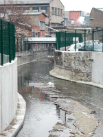
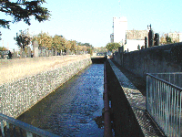
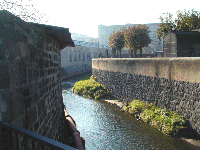

|

Elle entre chez Michelin entre murs et grillages.

|
|

|
Elle réapparaît aux yeux du
public entre le cimetière des Carmes et les
Usines Michelin, puis elle disparaît
définitivement. Seuls les noms Bédat
et Artière figurent en aval de Clermont.
|

|
Je remercie M. Jean Michel Delaveau qui a fait un
travail remarquable : La Tiretaine, rivière
secrète de Clermont-Ferrand
édité par la Galipote à
Vertaizon. J'y ai trouvé une source de
renseignements qui m'ont évité d'écrire
trop de bêtises ! :-)
Si vous êtes entré directement ici
: page d'accueil,
entrée du site
|